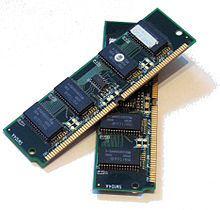
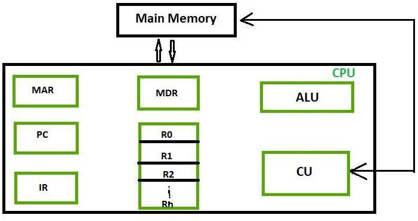
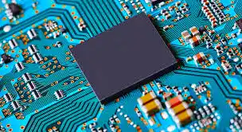
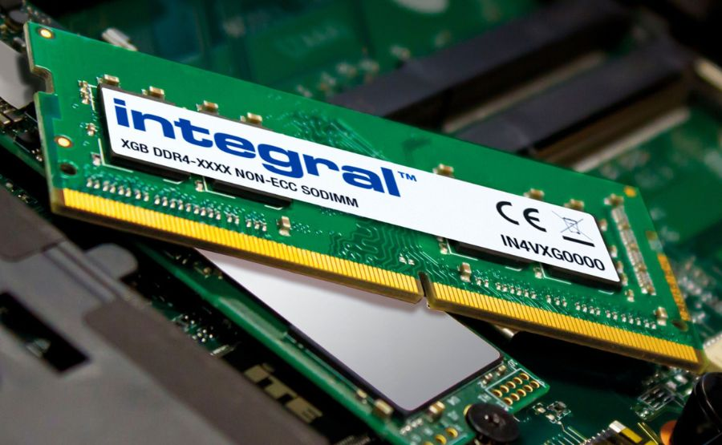

Cpu component
| Sr no. |
Name |
images |
Discription |
| 1. |
Memory |
 |
Computer memory stores information, such as data and programs, for immediate use in the computer.[2] The
term memory is often synonymous with the terms RAM, main memory, or primary storage. Archaic synonyms
for main memory include core (for magnetic core memory) and store.[3]
|
| 2. |
Register |
 |
A processor register is a quickly accessible location available to a computer's processor. Registers
usually consist of a small amount of fast storage, although some registers have specific hardware
functions, and may be read-only or write-only.
|
| 3. |
Arthamatic logic unit |
 |
The inputs to an ALU are the data to be operated on, called operands, and a code indicating the
operation to be performed (opcode); the ALU's output is the result of the performed operation. In many
designs, the ALU also has status inputs or outputs, or both, which convey information about a previous
operation or the current operation, respectively, between the ALU and external status registers. |
| 4. |
Chache |
 |
A cache is made up of a pool of entries. Each entry has associated data, which is a copy of the same
data in some backing store. Each entry also has a tag, which specifies the identity of the data in the
backing store of which the entry is a copy. |
| 5. |
Ram |
 |
Random access memory that temporarily stores programs and files that the CPU is accessing
Computers with more RAM can process and hold larger files and programs
Clock |
| 6. |
Graphic Card |
 |
A graphics card, also known as a video card or graphics processing unit (GPU), is a hardware component
responsible for rendering and displaying images, videos, and animations on your computer monitor. |
| 7. |
Arthimatic circuit |
 |
A graphics card, also known as a video card or graphics processing unit (GPU), is a hardware component
responsible for rendering and displaying images, videos, and animations on your computer monitor. |
| 8. |
Clock |
 |
To "clock someone" used in this way usually means to notice something they're doing or something about
them that they wanted to keep hidden.13 Jan 2023 |
| 9. |
Buses |
 |
Buses are used to send control signals and data between the processor and other components. Three types
of bus are used. Address bus - carries memory addresses ... |
| 10. |
Advantage of cpu |
 |
CPU is the most significant in a computer system. It is the component that regulates all internal and
external devices and implements arithmetic and logic ...
|
| 11. |
Computer Architecture |
 |
The Architecture is the fundamental design and structure of a central processing unit (CPU) that
encompasses various components such as the Control Unit, ... |
| 12. |
Boolen logic |
|
Diagram of Components Within the CPU · Arithmetic circuit. This carries out any arithmetic (addition,
subtraction, multiplication or division) · Logic circuit. |
| 13. |
Graphic concept |
 |
Integrated Graphics are a type of graphics processing unit (GPU) that is integrated directly into the
CPU chip, sharing the same silicon die. This integration ... |
| 14. |
Software |
 |
image of Softwaret3.gstatic.com
Computer systems are a combination of both hardware and software working together. Hardware is the
physical components of a computer and software is the ... |
| 15. |
Procedure |
 |
The process of a CPU involves fetching, decoding, executing, and storing instructions. This process is
repeated for each instruction in a program.
|